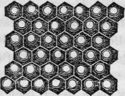
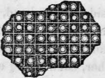
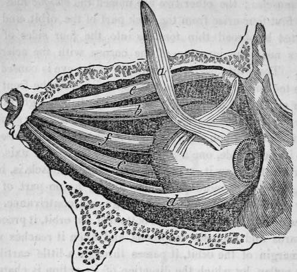

The Sense Of Sight. Part 7
Description
This section is from the book "Human Physiology For The Use Of Elementary Schools", by Charles Alfred Lee. Also available from Amazon: Human Physiology, for the Use of Elementary Schools.
The Sense Of Sight. Part 7
36. The lowest order of animals have no organs of vision, or if so, they have never been detected. Many insects have two kinds of eyes, one kind on each side of the head, and the other on the top, in a row, or in the form of a triangle. The spider has generally eight of these eyes on the top of the head. What are called the compound eyes are placed on the side of the head, and in the wasp and dragon jly they cover a large part of it. These eyes are formed of a large number of separate cones or cylinders, closely packed together, each being a distinct eye, and hexagonal, or six sided in shape, like the cells of a honey comb. The ant has about 50 ; the beetle 3,000 ; the silk worm moth upwards of 6,000 ; the dragon fly 12,000 ; and some insects as many as 20,000.
37. It is now ascertained, that each eye forming these compound eyes of insects, consist of a distinct tube, furnished with every thing necessary for complete vision. The object of this wonderful arrangement seems to be to compensate for want of motion, by the number of eyes, as the insect thus supplied, has an eye pointed towards the object in whatever direction it may appear, and may therefore be truly called circumspect. If we examine the wasp and dragon fly, we shall find these compound eyes to cover a large portion of each side of the head. By examining with the microscope, we find each of these conical tubes covered with a cornea, and containing a crystalline lens, and aqueous and vitreous humour, an iris, a choroid coat, and a retina; the pigment running back around the lens, separating each cylindrical compartment. They have no eye lids, eye lashes, or tears ; but these are compensated for by the great hardness and insensibility of the cornea.
Eye of the yellow beetle magnified, composed of 8,820 hexagonal cylinders, the interior of each tube being round.
Eye of the phalaena or butterfly, magnified, consisting of 11,300 square sections. The eye of the mordella is similar, containing 25,088 prisms.
38. Motions Of The Eye
We have seen that the eye is a perfect optical instrument, infinitely surpassing the boasted specimens of human skill; but without the power of motion, of adapting it to the varied objects which surround us, we should derive but a very small proportion of that gratification and pleasure, of which it is now the source. We shall perceive the great advantages we enjoy from this benevolent provision, if we contemplate the movements of a telescope; how difficult it is to direct it to any object, so as to obtain a view of it, and what complicated and cumbrous machinery are required to effect it. But all the various motions of the eye are produced by six little muscles !
39. Four of the muscles of the eye are called straight or recti muscles ; the other two are named the oblique muscles. The first four arise from the back part of the orbit, and are inserted by broad thin tendons into the four sides of the globes near the junction of the cornea with the sclerotic coat. The white pearly appearance of the eye is caused by these tendons. The oblique muscles arise from the front and inner side of the orbit, and pass to the eye ball at right angles from the straight muscles, one passing over its upper surface, and the other upon its under surface, and both are inserted into its outer side, one a little above its horizontal axis, the other a little below it. The superior oblique muscle is, however, worthy of more particular notice, as no part of the body exhibits clearer marks of design and contrivance. It arises as I have said, from the bottom of the orbit, it proceeds forwards and becomes tendinous, and when it reaches near the margin of the orbit, it passes through a little cartilaginous pulley, by which the direction of its action is changed, precisely as we see done by a pulley among the ropes of a ship ; after passing through this little loop, which is dense, smooth, and elastic, and furnished with a lubricating fluid to diminish friction, the tendon runs obliquely backwards and towards the internal angle to be inserted into the ball. When this muscle acts, the eye is rolled directly inwards. Thus the muscle pulls in a direction contrary to its own action, as when a man raises himself by a rope thrown over a beam. The other, or inferior oblique muscle, rolls the eye outwards towards the temple. When they both act together, the eye is steadily carried forwards. The recti muscles move the eye in four directions, upwards, downwards, to the right, and to the left, each movement being affected by its appropriate muscle. When the four act together, the eye is drawn back towards the bottom of the orbit.
Side view of the muscles of the eye in their natural positions, a. b. C. d. the four straight muscles, a. is turned up to prevent the others from being hidden, c. the superior oblique muscle. f. the optic nerve. The other oblique muscle is not shown, but it lies on the other side of the ball, and comes round, and is inserted near the superior oblique ; so that they pull opposite ways, like two men sawing timber. By the combined action of all these muscles, an infinite variety of motions of the eye can be produced.
40. In order to facilitate the motions of the eye it is lodged securely on a soft bed of fat. This is contained in very large cells at the bottom of the orbits, and is more fluid than fat in general, and is less affected than any other part of the body by those causes, which produce general emaciation. The eye ball may therefore be said to move in a fluid medium, fully adequate to give every necessary sup. port, and at the same time affording the least possible resistance.
Continue to:
Tags
humans, anatomy, skeleton, bones, physiology, organs, nerves, brain